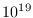
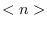
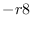
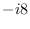
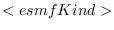
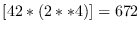

Next: 8 Tracking and Metrics Up: dev_guide Previous: 6 Test Harness Contents
Code and documentation developed for the ESMF will follow conventions for both style and content. The goal is to create software with a consistent look and feel so that it is easier to read and maintain.
Because much ESMF documentation is generated directly from source code, code and documentation conventions are closely intertwined.
ESMF maintains a set of templates for developing Fortran and
C++ codes and their documentation. The documentation templates
include requirements, design, and reference documents.
These templates are bundled with the source distribution, in
the following directory:
$(ESMF_DIR)/scripts/doc_templates
The do_newdoc script in the document templates package creates a new document directory and populates it with the appropriate files. The READMEs in the package describe the procedure for running the script.
The following scripts are included in the doc_templates package:
Software documentation for the last public release is at:
http://www.earthsystemmodeling.org -> Users -> Documentation
Software documentation for all releases is at:
http://www.earthsystemmodeling.org -> Download -> View All Releases
Documents are available to developers for editing through the ESMF repository on the SourceForge site.
Documents will be available in both web-browsable (e.g. html) and printer-friendly formats. They will be written in LATEX and based on a set of templates. LATEX was chosen because:
The following conventions for fonts and capitalization are used
in this and other ESMF documents.
| Style | Meaning | Example |
| italics | documents | ESMF Reference Manual |
| courier | code fragments | ESMF_TRUE |
| courier() | ESMF method name | ESMF_FieldGet() |
| boldface | first definitions | An address space is ... |
| boldface | web links and tabs | Developers tab on the website |
| Capitals | ESMF class name | DataMap |
ESMF class names frequently coincide with words commonly used within the Earth system domain (field, grid, component, array, etc.) The convention we adopt in this manual is that if a word is used in the context of an ESMF class name it is capitalized, and if the word is used in a more general context it remains in lower case. We would write, for example, that an ESMF Field class represents a physical field.
Diagrams are drawn using the Unified Modeling Language (UML). UML is a visual tool that can illustrate the structure of classes, define relationships between classes, and describe sequences of actions. A reader interested in more detail can refer to a text such as The Unified Modeling Language Reference Manual. []
General style recommendations for LATEX documentation include the following:
Performance reports should contain the following specific information:
A standard template for examples has not yet been created.
ESMF defines a set of standard methods and interface rules that hold across the entire API. These are:
The naming conventions listed here apply to arguments that appear in ESMF public interfaces. It is nice if internal arguments also adhere to these conventions, but not enforced as it is as the interface.
The following table lists a set of standard terms that we use in ESMF.
| Cell | grid cell |
| Coord | coordinate |
| Count | count |
| Dim | dimension, used for grids |
| Dst | destination |
| List | indicates that the quantity is an array |
| Local | indicates that the quantity is associated with a PET or DE |
| Per | per item |
| Rank | data array dimension |
| Send | send |
| Src | source |
| Recv | receive |
These are used in combination to create argument and variable names. For example, localCellCountPerDimList is an array of counts, per dimension, of the number of local grid cells.
type(ESMF_Field), intent(in) :: fieldList(:)
% $Id$
In addition, for source code, the CVS identifier must have the ability to be written to a variable for output to a configuration log. Therefore each F90 module must contain a declaration:
character(len=80), private :: version = '$Id$'
Source and documentation files must contain the ESMF license and copyright header:
! Earth System Modeling Framework ! Copyright 2002-2020, University Corporation for Atmospheric Research, ! Massachusetts Institute of Technology, Geophysical Fluid Dynamics ! Laboratory, University of Michigan, National Centers for Environmental ! Prediction, Los Alamos National Laboratory, Argonne National Laboratory, ! NASA Goddard Space Flight Center. ! Licensed under the University of Illinois-NCSA License.
example: ! TODO: add support for other data types (CMD 4/01).This will allow developers to 'grep' source files before software releases.
#define ESMC_FILENAME "./src/Infrastructure/Attribute/src/ESMCI_Attribute.C"
with the appropriate filename. Note that the path is relative to the ESMF root directory.
General style recommendations for source code include the following:
The objectives of these conventions are:
ESMF methods are classified into two categories: pre-review, and post-review. As of the version 3.0.1 release, *all* methods are pre-review.
Reviews are expected to begin once conventions for framework behavior are sufficiently well-defined. To pass review, methods must have their basic functionality fully implemented. If any unimplemented options are present, they must be documented and must generate appropriate errors in order for the method to pass review.
A pre-review method has its return code (rc) initialized to the value ESMF_RC_NOT_IMPL (not implemented). Possible sources of specific errors within the method, such as subroutine calls, generate local return codes (localrc).
The localrc values are evaluated using the function ESMF_LogMsgFoundError(), which takes both the localrc and the rc as input arguments. If the localrc does not indicate an error, rc is output from ESMF_LogMsgFoundError() with the value it had going into the call, and the value of the function is .false.. If localrc does indicate an error, rc is set to the localrc value before being output from ESMF_LogMsgFoundError(), and the value of the function is .true..
The convention is to place ESMF_LogMsgFoundError() into a conditional statement that causes a return from the method, with the correctly set rc, when an error is found in localrc, e.g.:
if (ESMF_LogFoundError(localrc, <other args ...>, rc)) returnUse of the ESMF_LogMsgFoundError() function is further described in the ESMF Reference Manual.
Note that if no error is found, rc retains its ESMF_RC_NOT_IMPL status throughout the method. The developer must explicitly set the rc to ESMF_SUCCESS just before returning from any branch that is believed to be successful.
The default rc value thus becomes ESMF_RC_NOT_IMPL for any code that is not explicitly marked as reaching success by the developer. Stub methods and incomplete branches can be handled very naturally this way - the developer simply does not set rc=ESMF_SUCCESS before returning. There are two differences in the treatment of pre-review and post-review methods:
These conventions achieve the first three objectives above, namely producing appropriate error messages throughout a method's life cycle, with minimal developer effort.
Under normal use - what a user will encounter by default - ESMF_RC_NOT_IMPL is treated as an error. However, through a special LogErr setting a developer who wishes to use stub methods and prototyping during code construction can equate ESMF_RC_NOT_IMPL with ESMF_SUCCESS. This achieves the fourth objective above, allowing for different user and developer modes of handling incomplete code. This is done by setting the errorMask argument in the ESMF_LogSet() call to ESMF_RC_NOT_IMPL, e.g.:
call ESMF_LogSet(errorMask = /ESMF_RC_NOT_IMPL/)
The following is an example of a pre-review method, sub(), that calls two subroutines internally, subsub1() and subsub2(). The subroutine sub() takes as input an integer argument that it can branch on and outputs a return code. Here branch==1 is fully implemented, branch==2 is incomplete, and other values of branch are not yet addressed. Several possible error scenarios are described following the code listing.
subroutine sub(branch, rc) integer :: branch integer, optional :: rc integer :: localrc ! local return code if (present(rc)) rc=ESMF_RC_NOT_IMPL ! ...code... if (branch==1) then call subsub1(localrc) if (ESMF_LogFoundError(localrc, & ESMF_ERR_PASSTHRU, & ESMF_CONTEXT, rc=rc)) then ! ... any necessary garbage collection ... return ! Return point 1 endif ! ...fully implemented code... if (present(rc)) rc=ESMF_SUCCESS elseif (branch==2) then call subsub2(localrc) if (ESMF_LogFoundError(localrc, & ESMF_ERR_PASSTHRU, & ESMF_CONTEXT, rc=rc)) then ! ... any necessary garbage collection ... return ! Return point 2 endif ! ...incomplete code... end if end subroutine
Note: This example is quite artificial, since simple branching like this would be better handled with a switch case statement that had a well-defined default. However, the control sequence shown better illustrates the sorts of errors that can occur in a real code with complex conditionals.
Possible scenarios:
This example is modeled on the pre-review example, but illustrates error handling for a post-review method. Here branch==1 is fully implemented, branch==2 is known to be incomplete, and other values of branch are cases that the developer and reviewers have missed. This is not what one would wish to see in reviewed code - ideally all cases should be implemented - but we cannot count on this. This example shows how deficiencies can most effectively be handled.
The return code rc is now initialized to ESMF_RC_NOT_SET. The developer has recognized that the branch==2 code is incomplete and rc is set explicitly to ESMF_RC_NOT_IMPL before returning.
subroutine sub(branch, rc)
integer :: branch
integer, optional :: rc
integer :: localrc ! local return code
if (present(rc)) rc=ESMF_RC_NOT_SET
! ...code...
if (branch==1) then
call subsub1(localrc)
if (ESMF_LogFoundError(localrc, &
ESMF_ERR_PASSTHRU, &
ESMF_CONTEXT, rc=rc)) then
! ... any necessary garbage collection ... return ! Return point 1
endif
! ...fully implemented code...
if (present(rc)) rc=ESMF_SUCCESS
elseif (branch==2) then call subsub2(localrc)
if (ESMF_LogFoundError(localrc, &
ESMF_ERR_PASSTHRU, &
ESMF_CONTEXT, rc=rc)) then
! ... any necessary garbage collection ...
return ! Return point 2
endif
! ...incomplete code...
if (present(rc)) rc=ESMF_RC_NOT_IMPL end if
end subroutine
{
Possible scenarios:
branch==1. Here the behavior is essentially the same as in scenarios 1 and 2. When there is an error in subsub1(), the returned rc from sub() has the error code subsub1() generated. When there is not an error in subsub1(), the returned rc from sub() is ESMF_SUCCESS.
branch==2 and there is an error in subsub2(). The behavior here is analogous to scenario 3. The returned rc from sub() has the error code subsub2() generated.
branch==2 and there is no error in subsub2(). The value of rc remains ESMF_RC_NOT_SET up to the point at which it is explicitly set to ESMF_RC_NOT_IMPL, and sub() ends. Method documentation is expected to explain the gap in functionality.
any value where branch and branch (e.g. branch==0). Here rc is not explicitly set to a value before the branch returns, and so sub() returns with the default rc value of ESMF_RC_NOT_SET. The user can tell from this error code that the developer did not consider this either unimplemented code or successful code, and that there is an unexpected “hole” in the method's functionality.
In Fortran code, the allocate and deallocate statements should always have their success or failure checked by using stat= and checking the value it returns. Since this value is defined by the Fortran standard, and is not an ESMF return code, the alternative checking calls are ESMF_LogFoundAllocError() and ESMF_LogFoundDeAllocError(). To further distinguish the difference between a Fortran status return and a ESMF return code, the local error variable should be named “memstat” rather than “localrc”.
real, allocatable :: big_array(:,:)
integer :: memstat
! ...
allocate (big_array(m,n), stat=memstat)
if (ESMF_LogFoundAllocError(memstat, &
ESMF_ERR_PASSTHRU, &
ESMF_CONTEXT, rc=rc)) then
! ... any necessary clean up
return
end if
! ... use big_array for a while
deallocate (big_array, stat=memstat)
if (ESMF_LogFoundDeAllocError(memstat, &
ESMF_ERR_PASSTHRU, &
ESMF_CONTEXT, rc=rc)) then
! ... any necessary clean up
return
end if
In C++ code, where the new operator is used, allocation errors can be caught by wrapping the allocation code inside a try block to catch any exceptions. Multiple allocations may be wrapped inside a single block in order to reduce the amount of checking code.
#include "ESMCI.h"
//...
void alloc_func (int m, int n, int *rc) {
#undef ESMC_METHOD
#define ESMC_METHOD alloc_func
double *array1, *array2;
try {
array1 = new double[m];
array2 = new double[n];
}
catch (std::bad_alloc) {
// ... any necessary clean up
ESMC_LogDefault.MsgAllocError("allocating array1 and array2",
ESMC_CONTEXT, rc);
return;
}
// ... use array1 and array2 for a while
delete array2;
delete array1;
}
In code which uses malloc() and free(), the return value from malloc() may be tested against NULL to determine if an error occurred. No checking is possible with free(). In new code, the C++ new operator and associated checking should be used.
Currently not all Fortran compilers support the automatic initialization of class components. However, in the ESMF system this initialization is used for two tasks. The first is the initialization of shallow class components which need to be set before they're used (e.g. flags). The second is the detection of invalid (e.g. not yet created) deep class variables. In order to handle these tasks in the absence of compiler initialization a software based solution has been developed.
The software solution is based on the improbability of an uninitialized variable containing a specific value. For example, given a 64 bit integer variable x, the probability of x containing the value 10 are approximately 1 in . This of course assumes that the value in an uninitialized variable is a uniformly distributed random variable, which is not necessarily true. However, the small probability of a given value occurring is not an unreasonable assumption given that the value is not pathological (e.g. 0 or binary 111111..). The probability can also be made as small as is necessary by using larger precision types.
Given the improbability of a specific value occurring in an uninitialized variable, the task of initializing a shallow class is implemented as follows. First, a non-pathological value, ESMF_INIT_DEFINED, is chosen. Next, an integer component, isInit, is added to the shallow class. Finally, for every routine taking the shallow class as an input variable, the component isInit is checked against ESMF_INIT_DEFINED. If they don't match, then the variable containing isInit is initialized, including setting isInit to ESMF_INIT_DEFINED. If they do match, then with extremely high probability the variable has already been initialized and nothing need be done. This algorithm helps to ensure that the shallow class is initialized before being used in the system.
The task of detecting an invalid deep class is implemented as follows. As before, we chose a value ESMF_INIT_CREATED, and add the isInit component to the class definition. Next, inside the constructors for the class isInit is set to ESMF_INIT_CREATED, and inside the destructors for the class isInit is set to something other than ESMF_INIT_CREATED. Finally, for every routine taking the deep class as an input variable, the component isInit is checked against ESMF_INIT_CREATED. If they match, then nothing happens because with extremely high probability the variable has been though the constructor and thus is valid. If they don't match, then the variable is invalid and an error occurs. This allows invalid deep class variables to be detected before being used in the system.
In order to make the process of adding these non-compiler based initialization tasks easier, a set of macros has been defined. The following is a description of the procedures to use them.
These changes should be added to all new F90 code in both the source (/src) and interface (/interface) subdirectories of the classes.
When adding code as a part of this task remember to use the standard ESMF coding conventions. In particular, when adding new routines remember to use the standard ESMF protex style (BOP/EOP) subroutine description, like those that appear in every other ESMF subroutine. For Validate use the BOP/EOP tags for ESMF_TYPEGetInit and ESMF_TYPEInit use the internal BOPI/EOPI tags.
Some F90 source files are autogenerated. In this case, modify the macro file which is used to create the autogenerated file. The macro file is usually named something like ESMF_TypeMacos.h. When modifying a macro file remember to end each line with: @ To recognize when an F90 file is autogenerated they usually have the line: <Created by maco - do not edit directly> close to the beginning. There will also usually be a .cpp file with the same name as the .F90 file.
For the purposes of initialization standardization the classes in the system have been divided into three types: shallow, deep, and parameter. Shallow classes have little if any allocation and can often be used right after declaration. An example of a shallow class is ESMF_ArraySpec. Deep classes on the other hand have a lot of allocated data and need to be constructed before being used. An example of a deep class is ESMF_State. Parameter classes are those which are used to add type checking to a set of parameter values. This type of class is typically just a single integer wrapped in a Fortran type. An example of a parameter class is ESMF_GridType. Both shallow and deep classes are effected by the standardization, but parameter classes are left unchanged. See section 7.10.8 for a list of ESMF classes and their classification.
The instructions for the standardization have been broken up by what to do for each module, what to do for each type of class, and what to do for routines.
When adding a new F90 module do the following:
use ESMF_InitMacrosMod
#include "ESMF.h"
When adding a new shallow class definition perform the following steps:
use ESMF_UtilTypesMod
isn't in the list of used modules, then add it.
function ESMF_STYPEGetInit(s)
type(ESMF_STYPE), intent(in), optional :: s
ESMF_INIT_TYPE :: ESMF_STYPEGetInit
if (present(s)) then
ESMF_STYPEGetInit=ESMF_INIT_GET(s)
else
ESMF_STYPEGetInit=ESMF_INIT_DEFINED
endif
end function ESMF_STYPEGetInit
! Comments describing validate (see ESMF_StateValidate for an example)
subroutine ESMF_STYPEValidate(s,rc)
type(ESMF_STYPE), intent(inout) :: s
integer, intent(out),optional :: rc
! check initialization status
ESMF_INIT_CHECK_SET_SHALLOW(ESMF_STYPEGetInit,ESMF_STYPEInit,s)
! return success
if (present(rc)) then
rc=ESMF_SUCCESS
endif
end subroutine ESMF_STYPEValidate
public ESMF_STYPEInit
public ESMF_STYPEGetInit
public ESMF_STYPEValidate
to the PUBLIC MEMBER FUNCTION section.
Here is an example illustrating the whole procedure:
Starting with this shallow class definition:
module ESMF_ExampleMod
type ESMF_Shallow
private
... other components ...
#ifndef ESMF_NO_INITIALIZERS
integer :: num=0
integer, pointer :: list(:) => Null()
#else
integer :: num
integer, pointer :: list(:)
#endif
end type
! !PUBLIC TYPES:
public ESMF_Shallow
! !PUBLIC MEMBER FUNCTIONS:
contains
... other routines ...
end module ESMF_ExampleMod
The standardization procedure yields this:
(modified lines marked with *)
module ESMF_ExampleMod
* use ESMF_UtilTypesMod
* use ESMF_InitMacrosMod
type ESMF_Shallow
private
... other components ...
#ifndef ESMF_NO_INITIALIZERS
integer :: num=0
integer, pointer :: list(:) => Null()
#else
integer :: num
integer, pointer :: list(:)
#endif
* ESMF_INIT_DECLARE
end type
! !PUBLIC TYPES:
public ESMF_Shallow
! !PUBLIC MEMBER FUNCTIONS:
* public ESMF_ShallowInit
* public ESMF_ShallowValidate
* public ESMF_ShallowGetInit
contains
* function ESMF_ShallowGetInit(s)
* type(ESMF_Shallow), intent(in), optional :: s
* ESMF_INIT_TYPE :: ESMF_ShallowGetInit
*
* if (present(s)) then
* ESMF_ShallowGetInit=ESMF_INIT_GET(s)
* else
* ESMF_ShallowGetInit=ESMF_INIT_DEFINED
* endif
*
* end function ESMF_ShallowGetInit
*
* subroutine ESMF_ShallowInit(s)
* type(ESMF_Shallow) :: s
*
* s%num=0
* nullify(s%list)
*
* ESMF_INIT_SET_DEFINED(s)
* end subroutine ESMF_ShallowInit
*
* subroutine ESMF_ShallowValidate(s,rc)
* type(ESMF_Shallow), intent(inout) :: s
* integer, intent(out),optional :: rc
*
* ! check initialization status
* ESMF_INIT_CHECK_SET_SHALLOW(ESMF_ShallowGetInit,ESMF_ShallowInit,s)
*
* ! return success
* if (present(rc)) then
* rc=ESMF_SUCCESS
* endif
*
* end subroutine ESMF_ShallowValidate
... other routines ...
end module ESMF_Shallow
When adding a new deep class definition perform the following steps:
use ESMF_UtilTypesMod
isn't in the list of used modules, then add it.
function ESMF_DTYPEGetInit(d)
type(ESMF_DTYPE), intent(in),optional :: d
ESMF_INIT_TYPE :: ESMF_DTYPEGetInit
if (present(d)) then
ESMF_DTYPEGetInit=ESMF_INIT_GET(d)
else
ESMF_DTYPEGetInit=ESMF_INIT_CREATED
endif
end function ESMF_DTYPEGetInit
! Comments describing validate (see ESMF_StateValidate for an example)
subroutine ESMF_DTYPEValidate(d1,rc)
type(ESMF_DTYPE), intent(in) :: d1
integer, intent(out),optional :: rc
! Check Init Status
ESMF_INIT_CHECK_DEEP(ESMF_DTYPEGetInit,d1,rc)
! Add other checks here
! If all checks passed return success
if (present(rc)) then
rc=ESMF_SUCCESS
endif
end subroutine ESMF_DTYPEValidate
public ESMF_DTYPEGetInit
public ESMF_DTYPEValidate
to the PUBLIC MEMBER FUNCTION section.
The following are the standard names for the subroutines which set a class as created, set a class as deleted, and set the this pointer, and get the this pointer:
ESMF_DTYPESetInitCreated ESMF_DTYPESetInitDeleted ESMF_DTYPESetThis ESMF_DTYPEGetThis
Here is an example illustrating the whole procedure:
Starting with this deep type definition:
module ESMF_ExampleMod
type ESMF_Deep
private
... other components ...
end type
! !PUBLIC TYPES:
public ESMF_Deep
! !PUBLIC MEMBER FUNCTIONS:
contains
function ESMF_DeepCreate()
type(ESMF_Deep) :: ESMF_DeepCreate
... other create code ...
end function ESMF_DeepCreate
subroutine ESMF_DeepDestroy(d)
type(ESMF_Deep) :: d
... other create code ...
end subroutine ESMF_DeepDestroy
... other routines ...
end module ESMF_ExampleMod
The standardization procedure yields this:
(modified lines marked with *)
module ESMF_ExampleMod
* use ESMF_UtilTypesMod
* use ESMF_InitMacrosMod
type ESMF_Deep
private
... other components ...
* ESMF_INIT_DECLARE
end type
! !PUBLIC TYPES:
public ESMF_Deep
! !PUBLIC MEMBER FUNCTIONS:
* public ESMF_DeepValidate
* public ESMF_DeepGetInit
contains
* function ESMF_DeepGetInit(d)
* type(ESMF_Deep), intent(in),optional :: d
* ESMF_INIT_TYPE :: ESMF_DeepGetInit
*
* if (present(d)) then
* ESMF_DeepGetInit=ESMF_INIT_GET(d)
* else
* ESMF_DeepGetInit=ESMF_INIT_CREATED
* endif
*
* end function ESMF_DeepGetInit
*
* subroutine ESMF_DeepValidate(d,rc)
* type(ESMF_Deep), intent(in) :: d
* integer, intent(out),optional :: rc
*
* ! Check Init Status
* ESMF_INIT_CHECK_DEEP(ESMF_DeepGetInit,d,rc)
*
* ! Add other checks here
*
* ! If all checks passed return success
* if (present(rc)) then
* rc=ESMF_SUCCESS
* endif
*
* end subroutine ESMF_DeepValidate
function ESMF_DeepCreate()
type(ESMF_Deep) :: ESMF_DeepCreate
... other create code ...
* ESMF_INIT_SET_CREATED(ESMF_DeepCreate)
end function ESMF_DeepCreate
subroutine ESMF_DeepDestroy(d)
type(ESMF_Deep) :: d
... other create code ...
* ESMF_INIT_SET_DELETED(d)
end subroutine ESMF_DeepDestroy
... other routines ...
end module ESMF_ExampleMod
When adding a new parameter class definition, don't add any initialization standardization code. However, do add the new class to the class list in section 7.10.8.
When adding a new subroutine or function (both referred to as 'routine' henceforth) perform the following steps:
The initialization macros in 1. and 2. should be added before any code which uses the types being checked.
When adding the check macros to code there are a couple of issues to keep in mind for compatibility with all compilers. First, don't break up the macro across lines (e.g. using &). Second, some compilers have a maximum line length. Occasionally, the Deep class check macro will expand to larger than this length, if you find that this is occurring with a particular line use the ESMF_INIT_CHECK_DEEP_SHORT macro instead. It takes exactly the same parameter list as the normal deep class check macro, but expands to a much shorter line.
Here is an example illustrating this procedure:
Starting with this routine:
subroutine ESMF_EXAMPLE(s1,d1,s2,d2,d3,rc)
type(ESMF_Shallow1), intent(in) :: s1
type(ESMF_Shallow2), intent(out) :: s2
type(ESMF_Deep1),intent(in) :: d1
type(ESMF_Deep2),intent(inout) :: d2
type(ESMF_Deep3),intent(out) :: d3
integer :: rc
.... local variable declarations ...
! initialize return code
rc=ESMF_FAILURE
...... rest of subroutine code....
end subroutine ESMF_Example
The standardization yields this:
(modified lines marked with *)
subroutine ESMF_EXAMPLE(s1,d1,s2,d2,d3,rc)
* type(ESMF_Shallow1), intent(inout) :: s1
type(ESMF_Shallow2) :: s2
type(ESMF_Deep1) :: d1
type(ESMF_Deep2),intent(inout) :: d2
type(ESMF_Deep3),intent(out) :: d3
integer :: rc
.... other local variable declarations ...
! initialize return code
rc=ESMF_FAILURE
* ! check variables
* ESMF_INIT_CHECK_DEEP(ESMF_Deep1GetInit,d1,rc)
* ESMF_INIT_CHECK_DEEP(ESMF_Deep2GetInit,d2,rc)
*
* ESMF_INIT_CHECK_SET_SHALLOW(ESMF_Shallow1GetInit,ESMF_Shallow1Init,s1)
* ESMF_INIT_CHECK_SET_SHALLOW(ESMF_Shallow2GetInit,ESMF_Shallow2Init,s2)
...... rest of subroutine code....
end subroutine ESMF_Example
CAUTION: The following lists are very much outdated!!!
| Class | Type | Fortran | ESMF |
| ESMF_Alarm | Deep | public | public |
| ESMF_AlarmList_Flag | Parameter | public | public |
| ESMF_Array | Deep | ||
| ESMF_ArrayBundle | Deep | ||
| ESMF_ArraySpec | Shallow | ||
| ESMF_Attribute | Shallow | ||
| ESMF_Base | Deep | ||
| ESMF_BaseTime | Shallow | ||
| ESMF_CWrap | Deep | ||
| ESMF_Calendar | Deep | ||
| ESMF_CalKind_Flag | Parameter | ||
| ESMF_Clock | Deep | ||
| ESMF_CommHandle | Deep | ||
| ESMF_CommTable | Deep | ||
| ESMF_CompClass | Deep | ||
| ESMF_CompType_Flag | Parameter | ||
| ESMF_Config | Deep | ||
| ESMF_ConfigAttrUsed | Shallow | ||
| ESMF_Context_Flag | Parameter | ||
| ESMF_CoordOrder | Parameter | ||
| ESMF_CplComp | Deep | ||
| ESMF_DELayout | Deep | ||
| ESMF_DataHolder | Shallow | ||
| ESMF_DataValue | Ignore | ||
| ESMF_Decomp_Flag | Parameter | ||
| ESMF_Direction_Flag | Parameter | ||
| ESMF_DistGrid | Deep | ||
| ESMF_Field | Deep | ||
| ESMF_FieldBundle | Deep | ||
| ESMF_FieldBundleDataMap | Shallow | ||
| ESMF_FieldBundleType | Deep | ||
| ESMF_FieldDataMap | Shallow | ||
| ESMF_FieldType | Deep | ||
| ESMF_Fraction | Shallow | ||
| ESMF_Grid | Deep | ||
| ESMF_GridComp | Deep | ||
| ESMF_GridStatus_Flag | Parameter | ||
| ESMF_Index_Flag | Parameter | ||
| ESMF_InterfaceInt | Ignore |
| Class | Type | Fortran | ESMF |
| ESMF_LOGENTRY | Shallow | ||
| ESMF_LocalArray | Deep | ||
| ESMF_Log | Shallow | ||
| ESMF_LogKind_Flag | Parameter | ||
| ESMF_Logical | Ignore | ||
| ESMF_Mask | Shallow | ||
| ESMF_LogMsg_Flag | Parameter | ||
| ESMF_NeededFlag | Parameter | ||
| ESMF_ObjectID | Shallow | ||
| ESMF_Pin_Flag | Parameter | ||
| ESMF_PhysGrid | Deep | ||
| ESMF_Pointer | Ignore | ||
| ESMF_ReadyFlag | Parameter | ||
| ESMF_Reduce_Flag | Parameter | ||
| ESMF_Region_Flag | Parameter | ||
| ESMF_RegridMethod_Flag | Parameter | ||
| ESMF_RelLoc | Parameter | ||
| ESMF_ReqForRestartFlag | Parameter | ||
| ESMF_Route | Deep | ||
| ESMF_RouteHandle | Deep | ||
| ESMF_StaggerLoc | Shallow | ||
| ESMF_State | Deep | ||
| ESMF_StateClass | Deep | ||
| ESMF_StateItem | Shallow | ||
| ESMF_StateItem_Flag | Parameter | ||
| ESMF_StateIntent_Flag | Parameter | ||
| ESMF_Status | Parameter | ||
| ESMF_Sync_Flag | Parameter | ||
| ESMF_End_Flag | Parameter | ||
| ESMF_Time | Shallow | ||
| ESMF_TimeInterval | Shallow | ||
| ESMF_VM | Deep | ||
| ESMF_VMId | Deep | ||
| ESMF_VMPlan | Deep | ||
| ESMF_ValidFlag | Parameter |
The following tools and guidelines are in place in order to maintain the ESMF framework's portability and robustness, in light of the fact that neither the Fortran nor C++ standards require a fixed size for any given data type and/or kind. Please note that these guidelines pertain to the internal ESMF code, not to the user code that interfaces to it.
Any occurrence of Fortran data kind parameters within ESMF code must be specified with ESMF parameters only. e.g.
ESMF_KIND_I4
ESMF_KIND_I8
ESMF_KIND_R4
ESMF_KIND_R8
These are internally defined such that the size of the data they describe is the number at the end of the parameter. e.g. in
integer(ESMF_KIND_I8) :: someInteger
someInteger is an 8 byte integer in any platform.
Kind of literal constants:
Only the ESMF kind parameters listed above are allowed when specifying the kind of literal Fortran constants. e.g.
real(ESMF_KIND_R8) :: a,b
a=b*0.1_ESMF_KIND_R8
In the example above 0.1_ESMF_KIND_R8 is a literal constant of kind ESMF_KIND_R8 and value 0.1.
This means that any other syntax, such as:
a=b*0.1d0
a=b*0.1_8
is NOT to be used.
ESMF_KIND_I, ESMF_KIND_R: Note that the ESMF_TypeKind_Flag parameters: ESMF_KIND_I and ESMF_KIND_R are defined for use in user code only. They are handles offered to the user for ESMF internal default kinds and not to be used internally in the ESMF framework.
Real Data:
real(ESMF_KIND_R<n>) :: RealVariable
where  is the size in bytes of the memory occupied by each real datum. Allowed values of n are those that correspond to supported type/kind data, e.g.
real (ESMF_KIND_R8) :: a,b
declares a and b to be 8 byte reals
Integer Data:
The standards for integer data differ between integers that store user data and integers that do not.
Routines with user integer data arguments (e.g. integer arrays), must be overloaded for all integer data kinds supported. These will be declared as
integer(ESMF_KIND_I<n>)
where denotes data size in byte units.
Integers that do not represent user data must generally be declared without a specific kind (see the section below on Default Type Representation). Possible exceptions to this rule follow on items (3) and (4) below.
Care should be exercised to insure that integer arguments to intrinsic Fortran functions are of the correct kind (usually default). Likewise, argument parameters to VM routines should be of default kind.
In the case where a specific kind is required for integer ESMF routine arguments, such as occurs in TimeMgr routines, the requirement must be clearly documented (as noted above, ESMF kind parameters are to be used to specify the kind).
Default Type Representation:
Default Integer Data Internal to the ESMF:
Internally in the ESMF framework, all integer data intended to be of default kind must be declared without specifying their kind, e.g.
subroutine ESMF_SomeRoutine(foo)
integer :: foo
This is for clarity purposes, as well as to minimize the overall size of the framework.
ESMF_KIND_I must not be used to declare data internally within ESMF.
To provide some background, the handle ESMF_KIND_I is provided to aid users who want to insure that their integer user code matches the kind of ESMF internal default integer data. It is particularly useful when user code is compiled with integer autopromotion. User code that calls ESMF routines with internal default integer arguments could declare those integers to be of kind=ESMF_KIND_I, e.g.
program myUserCode
integer(ESMF_KIND_I) :: my_foo
call ESMF_SomeRoutine(my_foo)
Logical Data:
The standards for logical data differ between logicals which are used as dummy arguments in user-callable entry points, and those which need to be passed to ESMF C++ routines.
Routines with user logical data arguments use default kind arguments:
logical :: isActive
Local logicals within Fortran code also generally use the default Fortran logical data type.
ESMF defines a ESMF_Logical derived type for use when passing logical values between Fortran and C++ code. The constants ESMF_TRUE and ESMF_FALSE are available, and must be used to ensure compatibility with the C++ code.
For convenience, defined assignment operators are available which convert between Fortran logical and the ESMF_Logical derived type. Finally, there are .eq. and .ne. operators defined to compare ESMF_Logical values.
subroutine ESMF_SomeRoutine(myFlag)
use ESMF
implicit none
logical, intent(inout) :: myFlag
type(ESMF_Logical) :: myFlag_local
myFlag_local = myFlag ! Defined assignment
if (myFlag_local .eq. ESMF_TRUE) then ! Use of .eq. operator
call c_ESMC_SomeCRoutine (myFlag_local) ! Pass to C++
else
call c_ESMC_OtherCRtoutine (myFlag_local)
end if
myFlag = myFlag_local ! Defined assignment
end subroutine
ESMF C datatypes are also declared with the property that their size remains constant across platforms. This convention is set in order to make ESMF more robust in terms of portability, as well as for the correct matching of Fortran-C routine interfaces. They have a direct size correspondence to their Fortran counterparts. Their names are:
ESMC_I4 (=) integer type of size 4 bytes
ESMC_I8 (=) integer type of size 8 bytes
ESMC_R4 (=) floating point type of size 4 bytes
ESMC_R8 (=) floating point type of size 8 bytes
e.g.
ESMC_R4 someFloat;
here someFloat is a 4 byte floating point in any platform.
Real Data:
ESMC_R<n> RealVariable;
where is the size in bytes of the memory occupied by each real datum. (Allowed values of n are those that correspond to supported type/kind data). e.g.
ESMC_R8 a,b;
which declares a and b to be 8 byte reals.
Integer Data:
Boolean Data:
void fortran_caller(bool &myFlag) {
ESMF_Logical myFlag_local;
myFlag_local = myFlag;
if (myFlag_local == ESMF_TRUE)
ESMF_SomeFortranRoutine (&myFlag_local); // Pass to Fortran
else
ESMF_OtherFortranRtoutine (&myFlag_local);
myFlag = myFlag_local;
}
An enumerated parameter in C++ and a corresponding sequence parameter in Fortran are provided in order to identify the type-and-kind of data being processed in various ESMF routines. There is a one to one correspondence between the Fortran sequence and the C++ enumerated type. They are mostly used as a tool to customize code for a specific data type and kind, and to insure the correct handling of user data across Fortran-C interfaces.
In Fortran this sequenced type's name is ESMF_TypeKind_Flag.
The ESMF_TypeKind_Flag parameter names declared are:
ESMF_TYPEKIND_I4 (4 byte integer)
ESMF_TYPEKIND_I8 (8 byte integer)
ESMF_TYPEKIND_R4 (4 byte floating point)
ESMF_TYPEKIND_R8 (8 byte floating point)
The following are supported for user interface use only (they are not to be used internally in the ESMF framework):
ESMF_TYPEKIND_I (labels integer_not_autopromoted data)
ESMF_TYPEKIND_R (labels real_not_autopromoted data)
Fortran ESMF_TypeKind_Flag parameters mostly appear in calls to C routines that create or manipulate arrays, fields, or bundles. e.g.
....
ESMF_TypeKind_Flag :: tk
...
!-set tk
...
call FTN_X(c_ESMC_VMAllFullReduce( ..., tk, ... )
...
...
Likewise in C the enumerated type's name is ESMC_TypeKind_Flag.
The ESMC_TypeKind_Flag parameter names declared are:
ESMC_TYPEKIND_I4 (4 byte integer)
ESMC_TYPEKIND_I8 (8 byte integer)
ESMC_TYPEKIND_R4 (4 byte floating point)
ESMC_TYPEKIND_R8 (8 byte floating point)
In C, ESMC_TypeKind_Flag parameters are used to tailor computation to the type and kind of user data arguments being processed. e.g
void FTN_X(c_esmc_vmallfullreduce)(.., ESMC_TypeKind_Flag *dtk, ..,int *rc){
.....
switch (*dtk){
case ESMC_TYPEKIND_I4:
....
break;
case ESMC_TYPEKIND_R4:
....
break;
case ESMC_TYPEKIND_R8:
...
break;
default:
....
}
...
There must be a one to one correspondence of Fortran and C arguments as illustrated in the table below. So for example, if a Fortran routine calls a C method that expects an argument of type ESMC_I4, the argument in the Fortran call should be declared to be an integer of kind=ESMF_KIND_I4.
integer(ESMF_KIND_I4) <--> ESMC_I4 [4 bytes]
integer(ESMF_KIND_I8) <--> ESMC_I8 [8 bytes]
real(ESMF_KIND_R4) <--> ESMC_R4 [4 bytes]
real(ESMF_KIND_R8) <--> ESMC_R8 [8 bytes]
integer <--> int
type(ESMF_Logical) <--> ESMC_Logical
etc.
Also, ESMF_TypeKind_Flag and ESMC_TypeKind_Flag values are set to have matching values. That is:
ESMF_TYPEKIND_I<n> = ESMC_TYPEKIND_I<n>
ESMF_TYPEKIND_R<n> = ESMC_TYPEKIND_R<n>
Character strings:
When passing character strings to subprograms, most Fortran compilers pass 'hidden' string length arguments by value after all of the user-supplied arguments. Each hidden argument corresponds to each character string that is passed. Because of varying compiler support of 32-bit vs 64-bit string lengths, the ESMCI_FortranStrLenArg macro is used in C++ code to specify the data type of the hidden arguments.
For input arguments is usually convenient to copy the Fortran string into a C++ string. The ESMC_F90lentrim procedure provides a common way to obtain the length of the Fortran string - while ignoring trailing blanks. It is analogous to the Fortran len_trim intrinsic function.
void FTN_X(c_esmc_somecode) (
const char *name1, // in - some name in a character string
const char *name2, // in - some other name
int *rc, // out - return code
ESMCI_FortranStrLenArg name1_l, // in - hidden length of name1
ESMCI_FortranStrLenArg name2_l) { // in - hidden length of name2
string name1_local = string (name1, ESMC_F90lentrim (name1, name1_l));
string name2_local = string (name2, ESMC_F90lentrim (name2, name2_l));
...
}
Likewise, when C++ code needs to pass a character string to Fortran code, passing the string itself is performed by it address. The hidden length argument uses the standard string length method:
FTN_X(f_esmf_somef90code) (
name1_local.c_str(),
name2_local.c_str(),
&localrc,
(ESMCI_FortranStrLenArg) name1_local.length(),
(ESMCI_FortranStrLenArg) name2_local.length())
Note that when an array of characters is passed, the hidden string size is that of an individual array element. The size of each dimension of the array should be explicitly passed through separate arguments. Thus, in the following declaration, the hidden argument would have a value of 32. The dimensions, 20 and 30, would need to be separately passed:
character(32) :: char_array(20,30)
:
call c_esmc_something ( &
char_array, size (char_array,1), size (char_array, 2), &
localrc)
Optional arguments in the public ESMC interface are implemented using the variable-length argument list functionality provided by <stdarg.h>. The <stdarg.h> header contains a set of macros which allows portable functions that accept variable-length argument lists (also known as variadic functions) to be written. Variadic functions are declared with an ellipsis in place of the last parameter and must have at least one named (fixed) parameter. A typical example of such a function is printf which is declared as
int printf(char *fmt, ...).
The following type and macros are provided by <stdarg.h> for processing variable-length argument lists.
In order to correctly retrieve arguments from the variable argument list it is necessary to know the type of each argument. In order to correctly terminate parsing the variable argument list it is also necessary to know the number of arguments in the list. Since the number of arguments and their types are not known at compile time the best one can do is establish a convention such that the caller will provide type and length information about the variable argument list. The convention, however, is not a guarantee that the caller does not mistakenly specify the types or number of arguments. The scanf and printf functions do this by having the last fixed argument be a character (format) string in which the caller specifies the types (for example, "%f%d%s" for each argument in the variable argument list. Although, the format string specifies the number of expected arguments there is no actual "termination-flag" inserted at the end of the variable argument list. If the caller incorrectly specifies the in the format string more arguments than are actually provided then the function will likely access invalid sections of memory while parsing the variable argument list. Unless this error is trapped by the system the function will unwittingly process erroneous data.
The following conventions are established for the public ESMC optional argument
API. The "class" associated with this API is called ESMC_Arg and its
header files are located in Infrastructure/Util/include. The public
optional argument API for a class is provided by the public header for that class
together with ESMC_Arg.h. Macros for internal processing of optional
arguments are provided by the ESMCI_Arg.h header.
Each ESMC class has a set of named optional arguments associated with its
methods. Associated with each optional argument of a class is a unique (within
the class) optional argument identifier (id) of type
ESMCI_ArgID. The optional argument list provided by
the caller must consist of a sequence of argument identifier and argument
(id, arg) pairs. The optional argument list must be terminated
by the global identifier ESMCI_ArgLastID.
The ESMC_ArgLast macro is provided by ESMC_Arg.h for the
user to indicate the end of an optional argument list.
The global identifier ESMCI_ArgBaseID is the starting identifier for local (class) optional argument identifiers. ESMCI_ArgBaseID establishes a set of global optional argument identifiers, such that, the global set does not intersect with any class identifier set. The optional argument identifier list for a class will be declared in the public header for that class. The naming convention for optional argument identifiers is
ESMCI_<ClassName>Arg<ArgName>ID
where ClassName is the
name of the class and ArgName is the name of the optional argument with
the first letter capitalized. The optional argument identifier list is declared
as enumeration constants with the first identifier set equal to
ESMCI_ArgBaseID. Here is an example for a class called "Xclass".
// Optional argument identifier list for the ESMC_Xclass API.
enum {
ESMCI_XclassArgAoptID = ESMCI_ArgBaseID, // ESMC_I1
ESMCI_XclassArgBoptID, // ESMC_I4
ESMCI_XclassArgCoptID, // ESMC_R4
ESMCI_XclassArgDoptID, // ESMC_R8
ESMCI_XclassArgEoptID, // ESMC_Fred
};
It is helpful for the class developer to list the data type of
each optional argument (as a comment) with its associated id.
The ESMCI_Arg(ID,AR) internal macro (declared in ESMC_Arg.h) is provided for casting an optional argument and its associated id into the required sequence for passing to functions.
#define ESMCI_Arg(ID,ARG) ((ESMCI_ArgID)ID),(ARG)Each class will use this internal macro in its public header to declare user macros for the class specific optional arguments. The naming convention for class specific optional argument expansion macros is
ESMC_<ClassName>Arg<ArgName>(ARG)
where ClassName is the
name of the class and ArgName is the name of the optional argument with
the first letter capitalized. The argument of the macro is the actual caller
provided optional argument. Here is an example of how the macros are used for
the class "Xclass".
// Argument expansion macros for the ESMC_Xclass API. #define ESMC_XclassArgAopt(ARG) ESMCI_Arg(ESMCI_XclassArgAoptID,ARG) #define ESMC_XclassArgBopt(ARG) ESMCI_Arg(ESMCI_XclassArgBoptID,ARG) #define ESMC_XclassArgCopt(ARG) ESMCI_Arg(ESMCI_XclassArgCoptID,ARG) #define ESMC_XclassArgDopt(ARG) ESMCI_Arg(ESMCI_XclassArgDoptID,ARG) #define ESMC_XclassArgEopt(ARG) ESMCI_Arg(ESMCI_XclassArgEoptID,ARG)Here is an example call, with properly specified optional arguments, to a class function. The function has three named (fixed) arguments.
rc = ESMC_XclassFunc(fixedArg1,fixedArg2,fixedArg3,
ESMC_XclassArgAopt(aOptArg),
ESMC_XclassArgCopt(cOptArg),
ESMC_XclassArgDopt(dOptArg),
ESMC_ArgLast)
Internal macros for processing the optional argument list are declared in ESMCI_Arg.h. These macros provide a consistent internal interface to the macros defined in stdarg.h. What follows is a description of each macro available to a class developer.
The following type specific ESMCI_ArgGet macros are provided for
returning optional argument values. These macros correctly account for the
forced type conversions described above. In each macro, AP is the
optional argument list pointer.
Internal macros for returning standard C (non-pointer) types.
#define ESMCI_ArgGetChar(AP) (char)va_arg(AP,int) #define ESMCI_ArgGetShort(AP) (short)va_arg(AP,int) #define ESMCI_ArgGetInt(AP) (int)va_arg(AP,int) #define ESMCI_ArgGetLong(AP) (long)va_arg(AP,long) #define ESMCI_ArgGetLongLong(AP) (long long)va_arg(AP,long long) #define ESMCI_ArgGetFloat(AP) (float)va_arg(AP,double) #define ESMCI_ArgGetDouble(AP) (double)va_arg(AP,double)Internal macros for returning defined ESMC types.
#define ESMCI_ArgGetI1(AP) (ESMC_I1)va_arg(AP,int) #define ESMCI_ArgGetI2(AP) (ESMC_I2)va_arg(AP,int) #define ESMCI_ArgGetI4(AP) (ESMC_I4)va_arg(AP,int) #define ESMCI_ArgGetI8(AP) (ESMC_I8)va_arg(AP,ESMC_I8) #define ESMCI_ArgGetR8(AP) (ESMC_R8)va_arg(AP,double) #define ESMCI_ArgGetR4(AP) (ESMC_R4)va_arg(AP,double)Special internal macro for returning strings.
#define ESMCI_ArgGetString(AP) va_arg(AP,char*)General internal macro for returning all non-converted types.
#define ESMCI_ArgGet(AP,TYPE) va_arg(AP,TYPE)TYPE is the expected type of returned argument.
Each class function with optional arguments will declare an optional argument list pointer and optional argument list id.
ESMCI_ArgList argPtr; // optional argument list pointer ESMCI_ArgID argID; // optional argument list id
Parsing the optional argument list consists of three distinct phases: initializing the argument list pointer, retrieving each argument in succession based on its id, and finalizing the argument list pointer. The block for retrieving arguments must first retrieve an argument id. If that id is not ESMCI_ArgLastID and is in the set of valid ids for that function, then the argument is retrieved using a type-appropriate ESMCI_ArgGet macro. The following example code should be considered as "template" code for parsing an optional argument list.
// parse the optional argument list:
ESMCI_ArgStart(argPtr,ifix);
while ( (argID = ESMCI_ArgGetID(argPtr)) != ESMCI_ArgLastID ) {
switch ( argID ) {
case ESMCI_XclassArgAoptID:
aOpt = ESMCI_ArgGetI1(argPtr);
break;
case ESMCI_XclassArgBoptID:
bOpt = ESMCI_ArgGetI4(argPtr);
break;
case ESMCI_XclassArgCoptID:
cOpt = ESMCI_ArgGetR4(argPtr);
break;
case ESMCI_XclassArgDoptID:
dOpt = ESMCI_ArgGetR8(argPtr);
break;
case ESMCI_XclassArgEoptID:
eOpt = ESMCI_ArgGet(argPtr,ESMC_Fred);
break;
default:
ESMC_LogDefault.MsgFoundError(ESMC_RC_OPTARG_BAD, "", &rc);
return rc;
} // end switch (argID)
} // end while (argID)
ESMCI_ArgEnd(argPtr);
Prior to actually parsing the optional argument list a function must check the list for proper specification. This is done by using a code block similar to the parsing block shown above. The difference is that in this case the ESMCI_ArgGet macros are only used to increment the argument list pointer.
// check the optional argument list:
ESMCI_ArgStart(argPtr,lastFixed);
while ( (argID = ESMCI_ArgGetID(argPtr)) != ESMCI_ArgLastID ) {
switch ( argID ) {
case ESMCI_XclassArgAoptID: ESMCI_ArgGetI1(argPtr); break;
case ESMCI_XclassArgBoptID: ESMCI_ArgGetI4(argPtr); break;
case ESMCI_XclassArgCoptID: ESMCI_ArgGetR4(argPtr); break;
case ESMCI_XclassArgDoptID: ESMCI_ArgGetR8(argPtr); break;
case ESMCI_XclassArgEoptID: ESMCI_ArgGet(argPtr,ESMC_Fred); break;
default:
ESMC_LogDefault.MsgFoundError(ESMC_RC_OPTARG_BAD, "", &rc);
return rc;
} // end switch (argID)
} // end while (argID)
ESMCI_ArgEnd(argPtr);
The following example shows how an optional argument list check block can be structured to handle an optional argument whose type is call dependent. In this case the type of the dValue optional argument depends on the value of the ESMC_TypeKind_Flag argument tk (which is the last fixed argument).
// check the optional argument list:
ESMCI_ArgStart(argPtr,tk);
while ( (argID = ESMCI_ArgGetID(argPtr)) != ESMCI_ArgLastID ) {
switch ( argID ) {
case ESMCI_ConfigArgCountID: ESMCI_ArgGetInt(argPtr); break;
case ESMCI_ConfigArgLabelID: ESMCI_ArgGetString(argPtr); break;
case ESMCI_ConfigArgDvalueID:
switch ( tk ) {
case ESMC_TYPEKIND_I4: ESMCI_ArgGetI4(argPtr); break;
case ESMC_TYPEKIND_I8: ESMCI_ArgGetI8(argPtr); break;
case ESMC_TYPEKIND_R4: ESMCI_ArgGetR4(argPtr); break;
case ESMC_TYPEKIND_R8: ESMCI_ArgGetR8(argPtr); break;
case ESMC_TYPEKIND_LOGICAL: ESMCI_ArgGetInt(argPtr); break;
case ESMC_TYPEKIND_CHARACTER: ESMCI_ArgGetString(argPtr); break;
} // end switch (tk)
break;
default:
ESMC_LogDefault.MsgFoundError(ESMC_RC_OPTARG_BAD, "", &rc);
return rc;
} // end switch (argID)
} // end while (argID)
ESMCI_ArgEnd(argPtr);
The makefiles use GNU standard target names when possible. The default rule is to remake the ESMF library. Targets exist to build the unit and system tests, the examples, the demos, and to run them together or individually. Targets also exist to build the documentation and create pdf and html versions. For more details on targets, refer to the README file in the top level ESMF directory, and also the ESMF User's Guide.
The unit tests, the system tests, the examples, and the demos all share a common set of targets. The following target list illustrates the options for the examples. The names unit_tests, system_tests, demos, and all_tests can be substituted wherever examples occurs.
build/common.mkThe rules exist as pattern rules and are controlled by the variables set in a doc directory's makefile. The pattern rules will build .tex from source code and .pdf, .dvi and html files from .ctex files.
Variables that can be set in the individual doc/makefiles are called "makefile variables". These are:
Document file dependencies are set with:
The makefiles targets work from both local directory and from ESMF_DIR:
At the 'src' level, parallel to Infrastructure, Superstructure, and doc, is another include directory. This is for private include files which are ESMF-wide. These might include system-wide architecture dependent #defines constants, etc.
Below the Superstructure & Infrastructure level are the individual component levels (TimeMgr, Field, Component, etc). Under each of these directories is an include directory for the component specific include files.
Fortran allows the creation of generic subprogram names via the INTERFACE facility. This lets the caller use a simplified single name for a call. Then, based on the callers actual argument list, the compiler will choose an appropriate specific routine to perform the task.
When several specific variants of a generic call exist, and only differ in minor ways, for example by ESMF object type, it can be desirable to have the variants generated from a single definition. This allows improvements in the reliability and maintainability of the code. Feature code can be added in a single place, and all of the specific routines will automatically incorporate the new code.
By convention, generic ESMF Fortran code uses the GNU C preprocessor macro facility to generate specific routines. These routines generally differ only in the type, kind, and rank of the dummy arguments. The internal code is otherwise identical.
When writing a cpp macro, the definition must be 'one line' long. Since coding an entire subprogram requires many lines to implement, a backslash character is used at the end of each line to concatenate multiple lines from the input file into a single, very long, preprocessor line. After macro expansion, each preprocessor line needs to be converted into a sequence of Fortran statements. So again by convention, at-sign characters, @, are used as the second-to-last character in each line. After cpp has been run, the long lines from the result are split at the @ characters by converting them to newline characters. The tr command is used for this translation.
ESMF Fortran files which need to be preprocessed in this manner use the file name suffix .cppF90. This triggers the makefile system to use the following sequence when processing the file:
A simple example of generic code written in this style is:
module ESMF_Example_mod
use ESMF
implicit none
! The following header needs to be preprocessed by the compiler,
! not the first cpp pass. So use a caret as the first character,
! rather than a pound-sign.
^include "my_header.inc"
! Define a generic name with three specific routines
interface ESMF_generic_name
module procedure ESMF_ArraySpecifc
module procedure ESMF_FieldSpecfic
module procedure ESMF_MeshSpecific
end interface
contains
! Define a macro for expansion. Each line is terminated with a
! @\ sequence. Also note the use of ## for concatenation
! and # for stringization.
#define MySpecificMacro(mclass, mthis) \
subroutine mclass##Specific (mthis, rc) @\
type(mclass), intent(inout) :: mthis @\
integer, optional :: rc @\
@\
print *, |class = |, #mclass @\
@\
if (present (rc)) rc = ESMF_SUCCESSFUL @\
@\
end subroutine mclass##Specfic @\
! Expand macro for a few classes
MySpecificMacro(ESMF_Array, array)
MySpefificMacro(ESMF_Field, field)
MySpecificMacro(ESMF_Mesh, mesh)
end module ESMF_Example_mod
Character string concatenation via the Fortran concatenation operator // can be problematic due to the first pass preprocessing treating it as a C++ inline comment. An alternative is to use the ESMF_StringConcat function.
Rather than putting architecture names in all the source files, there will be an ESMF-wide file which contains sections like this:
#ifdef sgi #define HAS_VFORK 0 #define BCOPY_FASTER 1 #define FOPEN_3RD_ARG 1 #endif #ifdef sun #define HAS_VFORK 1 #define BCOPY_FASTER 0 #define FOPEN_3RD_ARG 1 #endifThis allows system-dependent code to be bracketed with meaningful names:
#if HAS_VFORK
vfork();
#else
fork();
exec();
#endif
and not an endless string of architecture names.
ESMF supports autopromotion of user code with respect to integer and real data types. This is data that a user would put in an array or field. By autopromotion we mean compiling user code with ,  or similar options on those platforms where these options are available. If a code is compiled with autopromotion, user data will be processed correctly by ESMF. That is because user data arguments in ESMF calls already are overloaded for all TKR(type-kind-rank). It is important to note that ESMF itself must not be compiled with autopromotion flags.
The ESMF API distinguishes four different flavors of integer and real arguments:
The ESMF API handles integer user data by overloading for TKR. The ESMF API handles real user data by overloading for TKR. The ESMF API handles integer parameters by using the system's default integer type. The ESMF API handles real parameters by explicitly specifying a kind.
As a result of the ESMF API conventions the autopromotion of integer and real user data is automatically handled within ESMF.
Integer parameters that are arguments to ESMF calls must be protected against integer autopromotion by explicitly specifying their kind as ESMF_KIND_I in the user code.
The safest way to handle real parameters is for the user to specify their explicit kind as expected by the API. However, the user may choose to omit the kind specifier for reasons of convenience. This however will make their code vulnerable with respect to autopromotion and make the user code less portable, breaking it where the system default real kind does not match the ESMF API.
The requirements for safe interfacing of autopromoted user code with ESMF are as follows:
...
integer, dimension(:), pointer :: intptr !User data arg.
!->No need for
!kind specifier.
integer(ESMF_KIND_I), dimension(3) :: counts ! Integer
! parameter
integer(ESMF_KIND_I), dimension(3) :: lbounds ! Integer
! parameter
integer(ESMF_KIND_I), dimension(3) :: ubounds ! Integer
! parameter
integer(ESMF_KIND_I) :: rc ! Integer
! parameter
...
call ESMF_LocalArrayCreate(array, counts, intptr, &
lboounds, ubounds, rc)
...
type(ESMF_Clock) :: clock
real(ESMF_KIND_R8) :: runTimeStepCount
integer(ESMF_KIND_I) :: rc
...
call ESMF_ClockGet(clock, runTimeStepCount, rc)
e.g. In the following code excerpt ESMF_TypeKindFind() is used to determine at runtime the correct ESMF_TypeKind_Flag parameter to use in the ESMF_ArraySpecSet() routine in preparation for creation of an ESMF Array that will store integer data that may or may not be autopromoted.
...
integer :: iScalar
...
type(ESMF_TypeKind_Flag) myTypeKind
myTypeKind= ESMF_TypeKindFind(iScalar)
call ESMF_ArraySpecSet(arrayspec, rank, myTypeKind, rc)
We considered the possibility of expanding autopromotion support to ESMF routine integer parameter arguments, in addition to those storing user data. Two options were considered as explained below. The reasons why we decided against such support, after discussion with the ESMF community, are as follows:
Rejected Options:
We considered and rejected two alternate options for autopromotion support. Here we illustrate with an example their impact on both the user code and the ESMF code. Note that this routine is overloaded for data arrays for all TKR supported and thus supports both real and integer autopromotion of user data.
1st option: support autopromotion of integers (options sizes 4 or 8 bytes) as long as all integer parameter arguments are of the same kind.
2nd option: support autopromotion of integers (options sizes 4 or 8 bytes). Mixed integer argument kinds.
For our example we use a call to ESMF_LocalArrayCreate() in each of the 2 option scenarios. In reading these example scenarios please keep in mind that ESMF code will not be compiled with autopromotion.
That is because only user code autopromotion is being considered. Thus the following statement could have different meaning if it is found within ESMF than in user code:
integer :: foo
In ESMF-------------------------------- ===> foo is of default
integer kind/size.
In User code compiled with autopromotion ==> foo is an integer
of kind/size
determined by
autopromotion flag.
With 1st Option:
USER CODE:
---- -----
...
integer, dimension(:), pointer :: intptr
integer , dimension(3) :: counts
integer , dimension(3) :: lbounds
integer , dimension(3) :: ubounds
integer :: rc
...
...
call ESMF_LocalArrayCreate(array, counts, intptr, &
lboounds, ubounds, rc)
Changes in ESMF:
The routine would need to be further overloaded in order to insure that all integer parameter call arguments (counts, lbounds, ubounds, and rc), are typecast to default integer inside the method (note that ESMF kind can be of size 4 or 8). It would be something like this:
subroutine ESMF_LocalArrayCreate(array, counts, intptr,.... &
lbounds, ubounds, rc)
......
integer(<esmfKind>) , intent(in), optional :: counts, &
lbounds, ubounds
integer(<esmfKind>), intent(out), optional :: rc
integer :: counts_noAP, lbounds_noAP, ubounds_noAP, rc_noAP
if (PRESENT(counts)) counts_noAP=counts
if (PRESENT(lbounds)) lbounds_noAP=lbounds
if (PRESENT(ubounds)) ubounds_noAP=ubounds
...
....
if (PRESENT(rc)) rc=rc_nonAP
return
With  = ESMF_KIND_I4 in one copy and ESMF_KIND_I8 in the other. The number of copies of the routine will increase from 42 to 84.
*(Note that in this particular routine, overloading is problematic because all the integer parameters are optional)
With 2nd Option:
USER CODE:
---- -----
...
integer, dimension(:), pointer :: intptr
integer(ESMF_KIND_I4) , dimension(3) :: counts
integer(ESMF_KIND_I8), dimension(3) :: lbounds
integer , dimension(3) :: ubounds
integer :: rc
...
...
call ESMF_LocalArrayCreate(array, counts, intptr, &
lboounds, ubounds, rc)
Changes in ESMF:
The routine would need to be further overloaded to support call arguments counts, lbounds, ubounds, and rc each being of either 4-byte or 8-byte size. In order to provide for all possible combinations of data sizes for these 4 integer parameters, the number of overloads would increase from 42 to , which explains why support of this option is not practical.
ESMF is written in a combination of C/C++ and Fortran. Techniques used in ESMF for interfacing C/C++ and Fortran codes are described in the ESMF Implementation Report[9], which is available via the Users tab on the ESMF website. These techniques, which address issues of memory allocation, passing objects across language boundaries, handling optional arguments, and so on, are general and have been applied to multiple projects.
We distinguish between these techniques and the conventions used by the ESMF project when interfacing C/C++ and Fortran. These conventions, which represent specific implementation choices, require additional input and explanation, and this section in the Guide is currently incomplete. The list below outlines the topics that we intend to address:
It is often necessary for C++ code to call Fortran code where optional arguments are used. By convention, most Fortran compilers use a C NULL for the argument address to indicate that the optional argument is missing.
The following Fortran subroutine has optional arguments. Note that Fortran 77 style adjustable size array dimensioning is used for array b:
subroutine f_ESMF_SomeProcedure (a, b, b_size, rc)
implicit none
real, intent(in), optional :: a
integer, intent(in) :: b_size
real, intent(out), optional :: b(b_size)
integer, intent(out), optional :: rc
if (present (a)) then
... = a
end if
...
if (present (b)) then
b(i) = ...
end if
...
if (present (rc)) then
rc = localrc
end if
end subroutine f_ESMF_SomeProcedure
When calling the above from C++, NULL can be used to indicate missing arguments:
extern "C" {
FTN_X(f_esmf_someprocedure)(float &a, float &b, int &b_size, int &rc);
}
...
// array b not present, so use NULL.
int b_size = 0;
FTN_X(f_esmf_someprocedure)(&a, NULL, &b_size, &rc);
...
// array b is present. Pass size and address.
float *b = new float[20];
int b_size = 20;
FTN_X(f_esmf_someprocedure)(&a, b, &b_size, &rc);
This standard is derived from the GFDL Flexible Modeling System Developers' Manual and the coding standard for the NCAR Community Atmospheric Model(CAM) developed by Jim Rosinski. Other documents containing coding conventions include the "Report on Column Physics Standards" (http://nsipp.gsfc.nasa.gov/infra/) and "European Standards For Writing and Documenting Exchangeable Fortran 90 Code" (http://nsipp.gsfc.nasa.gov/infra/eurorules.html).
The conventions assume the use of embedded documentation extractor ProTeX.
The use of preprocessor directives in ESMF is permitted under the following conditions:
filename.f - fixed format, no preprocessing. filename.F - free format, no preprocessing. filename.f90 - fixed format, with preprocessing. filename.F90 - free format, with preprocessing.
implicit none
in the module header, and every variable explicitly declared.
There are a few restrictions on the length of a character variable:
subroutine advection(flag)
integer, intent(in) :: flag
...
if( flag.EQ.1 )then
call upwind_advection( ... )
else if( flag.EQ.2 )then
call smolar_advection( ... )
...
endif
end subroutine advection
...
call advection(1)
is discouraged. This should instead be written as:
integer, parameter :: UPWIND=1, SMOLAR=2
...
subroutine advection(flag)
integer, intent(in) :: flag
...
if( flag.EQ.UPWIND )then
call upwind_advection( ... )
else if( flag.EQ.SMOLAR )then
call smolar_advection( ... )
...
endif
end subroutine advection
...
call advection(UPWIND)
module & module_name use & module_name
is forbidden.
use & module_name
This is to be consistent with the dependency analysis performed by mkmf outlined above.
Style is somewhat personal, and it would be needlessly restrictive to attempt to impose style requirements. These are recommendations which we believe will lead to pleasant encounters with clear, legible and understandable code. The only style requirement we place is that of consistency: a single code unit is required to be rigorous in using the author's preferred set of stylistic attributes. It is not onerous to follow a style: modern editors have many language-aware features designed to produce a consistent, customizable style.
Style recommendations include the following:
Example:
The header file for an ESMC_Widget is as follows:
**file ESMCI_Widget.h
// Internal Widget esmf class
#ifndef ESMCI_Widget_h
#define ESMCI_Widget_h
namespace ESMCI {
class Widget {
public:
Widget();
~Widget();
void Manufacture();
};
} // namespace ESMCI
The implementation file is:
***file ESMCI_Widget.C
#include <ESMCI_Widget.h>
namespace ESMCI {
Widget::Widget() {
...
}
Widget::~Widget() {
...
}
void Widget::Manufacture() {
...
}
} // namespace ESMCI
Lastly, when this object is used from C interface code, the following constructs are used:
*** file ESMC_SomeInterface_F.C
#include <ESMCI_Widget.h>
extern "C" {
// this cannot be in the ESMCI namespace, else it would change the
// linkage. We have two choices: 1) add using namespace ESMCI and
// then use Widget, else 2) qualify Widget, ESMCI::Widget
void FTN(c_esmc_someinterface)(
ESMCI::Widget **wptr, int *rc){
#undef ESMC_METHOD
#define ESMC_METHOD "c_esmc_someinterface()"
if (rc!=NULL)
*rc = ESMC_RC_NOT_IMPL;
.....
(*wptr)->Manufacture();
}
} // extern "C"
We provide two types of releases, public and internal, with similar tagging conventions.
The ESMF team will adopt the Climate and Forecast (CF) Metadata
conventions. These are available at:
http://www.unidata.ucar.edu/software/netcdf/conventions.html
esmf_support@ucar.edu